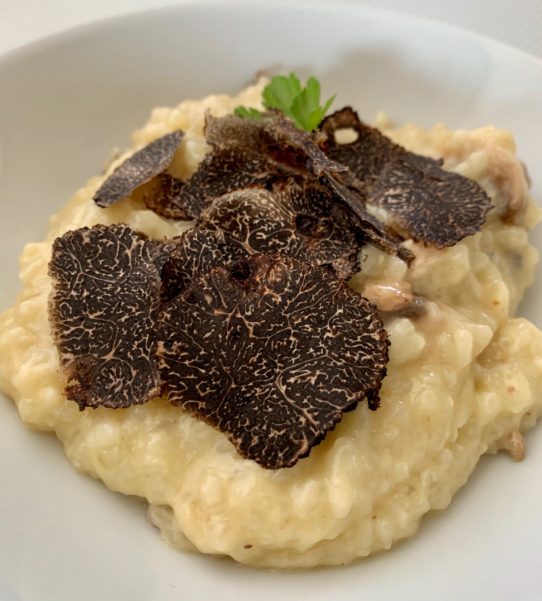

Temporada de setas y trufa negra

Ha comenzado la temporada de setas y trufa negra. Esta semana proponemos un arroz cremoso de trufa, setas y foie, elaborado con producto de temporada y acompañado de una selección de vinos de nuestra bodega.